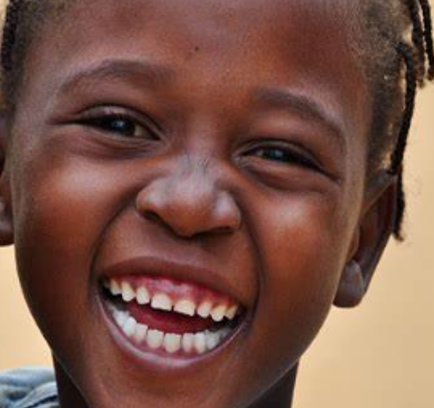

Apoio social e moral a crianças órfãs e vulneráveis, adolescentes e jovens. Juntos construímos um futuro mais justo.
A Luz Verde é uma associação de solidariedade que se dedica a irradiar a esperança, através do apoio social e moral a crianças órfãs e vulneráveis, adolescentes e jovens carenciados.
Apoiar crianças, adolescentes e jovens vulneráveis e aumentar a capacidade de resposta perante as suas necessidades.
Construir uma sociedade fundada no respeito pela dignidade das pessoas, especialmente as mais desfavorecidas.
Humildade, respeito mútuo, serviço, honestidade, voluntariado, profissionalismo e solidariedade.
Objectivo
Colaborar na construção duma sociedade baseada no respeito, na igualdade social e no bem-estar de todas as pessoas.
Educação
Área de atuaçãoSaúde
Área de atuaçãoNutrição
Área de atuaçãoIniciativas que transformam vidas e constroem comunidades mais resilientes e esperançosas.

Desenvolvimento sustentável das famílias com foco em educação, nutrição e inclusão económica nas comunidades desfavorecidas.
Objetivo: Reforçar o aprendizado de crianças dos 7 aos 15 anos, melhorando competências em leitura, escrita e numeracia.
Atividades Principais:

Empodera jovens raparigas por meio de formação, orientação e fortalecimento emocional, valorizando o protagonismo feminino.
Objetivo: Oferecer oportunidades educacionais a adolescentes raparigas para cursos profissionalizantes.
Atividades Principais:

Apoio educacional e social a crianças e adolescentes em situação de vulnerabilidade, promovendo oportunidades e esperança.
Objetivo: Promover proteção, desenvolvimento e novas oportunidades para crianças em situação de vulnerabilidade social através de vínculos afetivos ou financeiros com padrinhos/madrinhas.
Atividades Principais:

Promoção de saúde oral em crianças através de consultas, aplicação de flúor, kits de higiene e educação preventiva nas escolas e comunidades.
Objetivo: Promover a saúde oral para crianças dos 6 aos 15 anos, reduzindo índices de cáries e outros problemas bucais.
Atividades Principais:
Momentos de celebração, solidariedade e comunhão ao longo do ano.
Celebramos o espírito natalino levando alegria, alimentos e presentes a crianças e famílias em vulnerabilidade.
Ver maisAtividades lúdicas, educativas e culturais dedicadas às crianças, promovendo o direito à infância feliz e saudável.
Ver maisCampanhas de saúde, oficinas de capacitação, encontros e debates com as comunidades para promover solidariedade e inclusão.
Ver maisVeja alguns momentos marcantes dos nossos projetos e eventos.


Torne-se padrinho, voluntário ou parceiro da Associação Luz Verde. Cada contribuição transforma vidas e ilumina futuros.
Formulário de Adesão
Entre em contacto connosco pelos nossos canais.